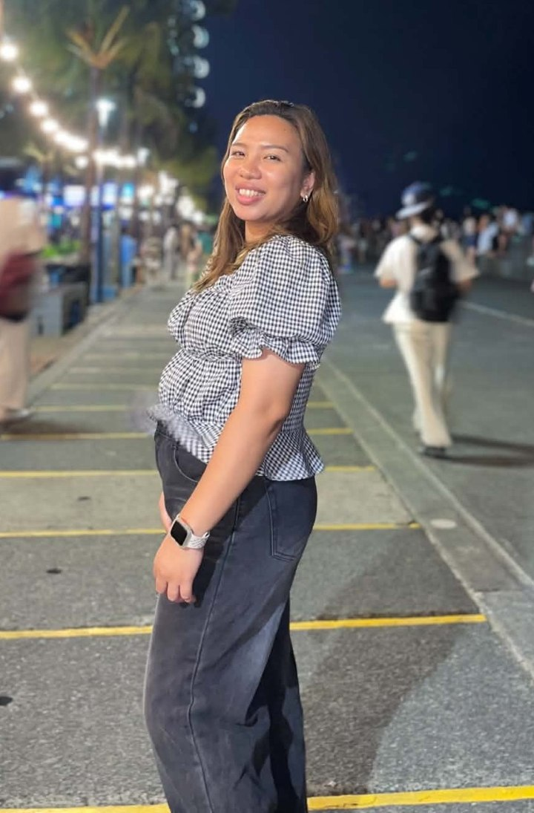

Abby De Ocampo | WDD 130

Hi! Kamusta? I’m Abby from the Philippines. I’m a mom of three boys, so I’m usually juggling being a mom, a student, and working part-time. I’d describe myself as an ambivert—I enjoy spending time with people, but I also like having some quiet time for myself. I like going out, especially riding a motorcycle and exploring new places. I graduated with a degree in BS Information Technology, and now I’m getting back into tech by relearning HTML and learning Python. It’s been a while since I’ve worked with some of these things, so I’m enjoying refreshing my knowledge and learning new skills along the way. Balancing everything can be challenging, but I’m happy to be learning again!